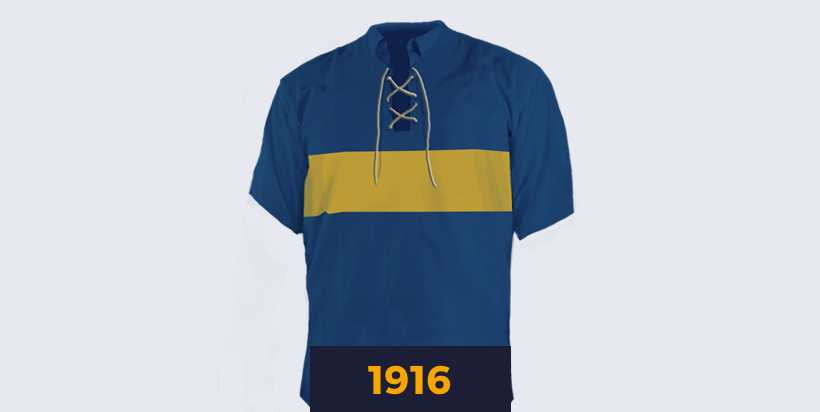
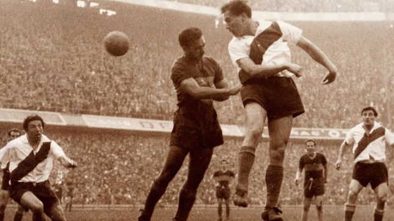

Nace una pasión
Lo que hicieron Esteban Baglietto, Alfredo Scarpatti, Santiago Sana y los hermanos Teodoro y Juan Antonio Farenga aquel 3 de abril de 1905 no fue muy distinto a lo que por entonces hacían otros grupos de amigos por el resto de la Argentina para canalizar un incontenible fervor popular por el fútbol.
Fundaban un club de fútbol. La particularidad del caso fue que, sin saberlo, estaban creando el más grande de la Argentina. Uno que se volvería pasión de multitudes y también un gigante mundial. Como la reunión en la casa de Baglietto fue interrumpida por inoportunas visitas, la ceremonia de fundación siguió al aire libre, en un banco de la Plaza Solís, y allí se fijó el nombre, tomado prestado del barrio, más ese Juniors que le daba un toque de prestigio inglés tan acorde con la época. Baglietto fue designado presidente. Y el 21 de abril de 1905, en el campo de juego de Independencia Sud, goleó 4-0 a Mariano Moreno en el primer partido de la historia. Un presagio de los tiempos por venir.

Los colores del alma
Boca ya tenía nombre, un terreno donde jugar, un puñado de inmigrante italianos que empujaban con pasión, pero le faltaba un color que lo identificara.
La indumentaria, por ese entonces, se resolvía como se podía y así fue como para los primeros partidos la hermana de los Farenga, Manuela, les cosió unos listones negros a una remeras blancas para que pudieran tener un juego de camisetas. La única condición era que no fueran rojas y blancas por... Alumni, el equipo inglés que dominaba la época. Boca también usó un modelo celeste, jugó durante algún tiempo con otro de finas rayitas azules hasta que adoptó definitivamente el azul y amarillo inspirado en los colores de la bandera de un barco sueco atracado en La Boca. Juan Bricchetto, que trabajaba en el puente por donde pasaban los vapores, trajo la solución del puerto. Primero fueron azules con una banda amarilla pero, para evitar confusiones con la dirección de la tira dorada, finalmente en 1913 se optó por esa franja dorada que hoy cruza por el pecho el alma de cada hincha de Boca.
Un duelo superclásico
El 13 de abril de 1913 quedó registrado en los libros como el debut de Boca en Primera, ante Estudiantil Porteño, en Ituzaingó, con una goleada por 4-1, y también llegó el primer superclásico del fútbol argentino.
Boca y River compartían barrio, origen y una rivalidad que fue creciendo con los primeros años de competencia hasta convertirse en el clásico de clásicos de la Argentina y uno de los espectáculos más convocantes del fútbol mundial, especialmente si se juega en la Bombonera, recomendado por diarios y revistas del extranjero como un espectáculo imperdible al turista que anda de paso por la Argentina. El primer choque formal de esa rivalidad que sumaría muchos capítulos más fue en la cancha de Racing y quedó en manos de River, que ganó 2-1. Antes de ese partido se registran algunos enfrentamiento de carácter amistoso que empezaban a moldear un duelo que se volvió símbolo del fútbol argentino. Y que, en el largo historial, hoy domina Boca con comodidad.
